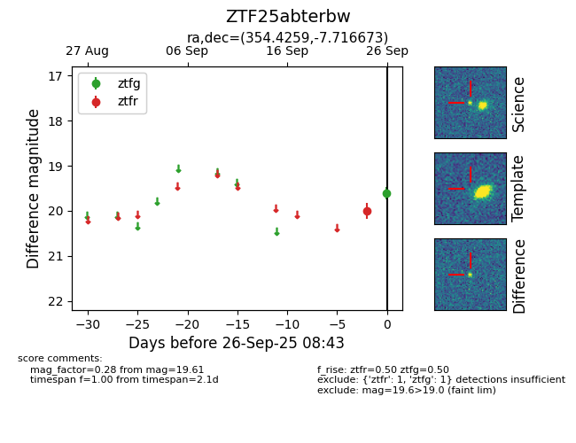

FINK: ZTF25abterbw
Lasair: ZTF25abterbw
ALeRCE: ZTF25abterbw
ZTF25abterbw (ztf,fink)
equatorial (ra, dec) = (354.4259,-7.71667)
galactic (l, b) = (77.5478,-63.88398)

last ztfg=19.61, ztfr=20.00
1 ztfg, 1 ztfr detections